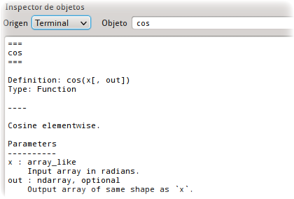
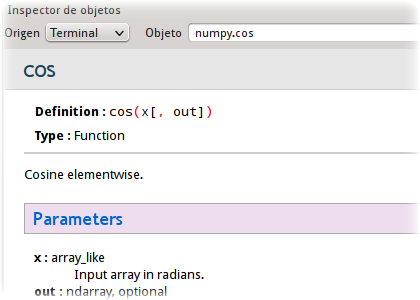
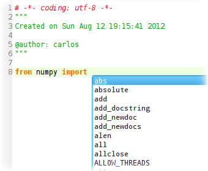
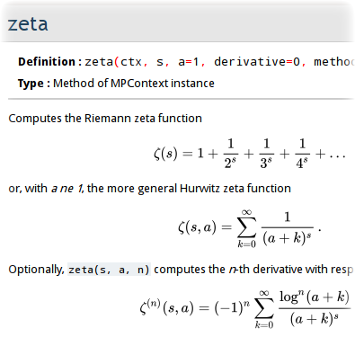
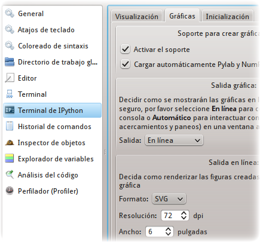
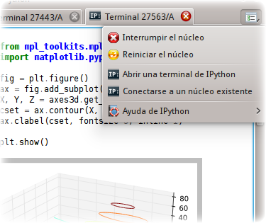
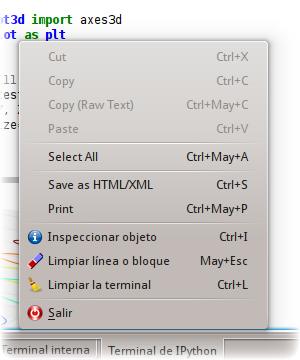
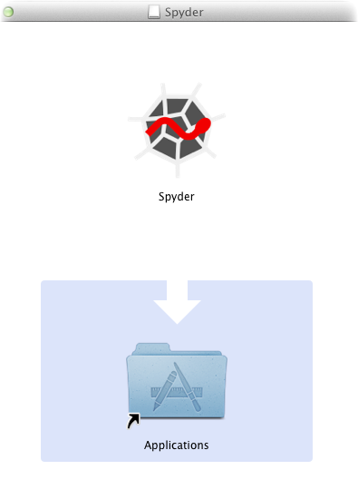

Spyder (Desde 2010)¶
A principios de 2010 el Profesor Fernando Perez de la Universidad de Berkeley, y creador de `IPython`_, vino a la Universidad de los Andes por intercesión mía, a dictarnos a varios estudiantes de posgrado un seminario sobre el uso de Python en computación científica. Este encuentro fue crucial para mí, pues me enseñó como utilizar y sacar el máximo provecho de las librerías científicas basadas en este lenguaje, y de las interfaces científicas para acceder a ellas. Lastimosamente las herramientas que nos mostró el Profesor Perez no constituían una entorno integrado, sino un conjunto de piezas inconexas cuyo uso no favorece demasiado la productividad del científico. Por ejemplo: el código se editaba en un programa y se debía ejecutar en otro, la documentación (aunque fácilmente accesible) se mostraba en texto plano, y no era posible inspeccionar visualmente los resultados obtenidos. Después de mi experiencia con Mathematica, yo ya sabía qué esperar de una plataforma científica, y no deseaba conformarme con una situación como la descrita. En mi opinión, contar con una buena plataforma es fundamental, pues es un programa que le permite al científico realizar un gran número de operaciones bajo un mismo entorno, tales como: extraer datos de distintos tipos de fuentes, procesarlos, graficarlos y ajustarlos al modelo que uno esté desarrollando. Entre más funcionalidad tenga la plataforma y más integrada esté, más eficiente será el desarrollo de una investigación. Por ello me di a la tarea de buscar un programa que (al menos en parte) cumpliese con estos requerimientos, que estuviese basado en Python, y que además fuese software libre. Después de varios meses de explorar y probar varias alternativas, finalmente me decidí por Spyder a mediados del 2010. Spyder remediaba muchas de las deficiencias mencionadas, pues fue diseñado por Pierre Raybaut como una plataforma científica capaz de reemplazar a Matlab. Después de usarlo durante un par de meses, empecé a hacer varios aportes para mejorar su funcionamiento, y en ello he venido trabajando desde entonces. Además de colaborar para resolver problemas (o bugs) en el programa y de dar soporte técnico a los usuarios, las contribuciones más importantes que he hecho a Spyder han sido: Ayuda en texto enriquecido¶Mi primer aporte fue hacer que Spyder pudiera mostrar la documentación de funciones y clases como texto enriquecido y no como texto plano. Para ello tomé una pequeña librería desarrollada por Tim Dumol para el proyecto Sage y la adapté para que funcionara en Spyder. Antes de este aporte, el usuario sólo podía acceder a la documentación de esta forma: y ahora puede lo puede hacer así: Completado de librerías¶Unos seis meses después de esta primera contribución, le añadí a Spyder la funcionalidad necesaria para que el usuario pudiera obtener sugerencias de completado cuando está intentando cargar una librería externa. Para ello adapté el código que con tal fin fue creado por los desarrolladores del proyecto IPython, pero que en ese momento sólo funcionaba en una terminal de comandos y no en una interfaz gráfica. A continuación se aprecia una imagen del resultado obtenido: Mostrar ecuaciones matemáticas en la ayuda¶A principios de este año le añadí a nuestro visor de ayuda la facilidad de renderizar ecuaciones matemáticas escritas en Latex, como se aprecia en la siguiente imagen: De esta forma los usuarios que están utilizando librerías creadas para realizar matemática simbólica o de precisión arbitraria, como SymPy y mpmath, pueden acceder a sus textos de ayuda con mucha mayor facilidad. Mejor integración con IPython¶Hace un año los desarrolladores de IPython introdujeron una novedosa interfaz gráfica para su terminal de ejecución, en la que se pueden incluir gráficas, ecuaciones matemáticas y código, como puede verse aquí. Casi de inmediato, Pierre incorporó esta terminal mejorada en Spyder. Sin embargo, Pierre realizó su labor muy rápidamente y como una prueba de concepto, razón por la cual la terminal no fue completamente integrada al resto de componentes de Spyder (como el Editor y el Inspector de Objetos). Por ello, la experiencia que el usuario podía obtener de la misma era bastante sub-óptima. No obstante, a finales de Mayo de este año la situación empezó a mejorar rápidamente, gracias a que Pierre le añadió a los componentes mencionados las piezas faltantes para lograr una verdadera integración con la terminal. Al contar con este nuevo código, yo pude concluir su trabajo en Junio. Primero añadí varias ventanas de configuración, para que el usuario pudiera ajustar visualmente las opciones más importantes de la terminal. Después le añadí un menú de opciones al componente que está a cargo de la terminal, para que el usuario contara con la posibilidad de interrumpir o reiniciar los cómputos que se están desarrollando en ella, y con un rápido acceso a la documentación de la misma. Finalmente le añadí algunos atajos de teclado para poder realizar varias acciones de forma más eficiente, como obtener la documentación de un objeto en el Inspector de Objetos. Instalador para MacOS X¶Durante Julio estuve concentrado en crear una aplicación para MacOS X que fuese completamente auto-contenida y funcional. El principal problema que afrontaban los usuarios de esta plataforma es que los programas y las librerías científicas necesarias para que Spyder funcionase adecuadamente eran difíciles de instalar, a diferencia de lo que ocurre en Linux y Windows. Ahora sólo deben descargar un disco de imagen de Apple (el medio más común para distribuir programas en Mac), que al abrirlo les presentará un instalador gráfico para que con un arrastre del mouse puedan empezar a usar nuestra aplicación en sus equipos. 
|
|